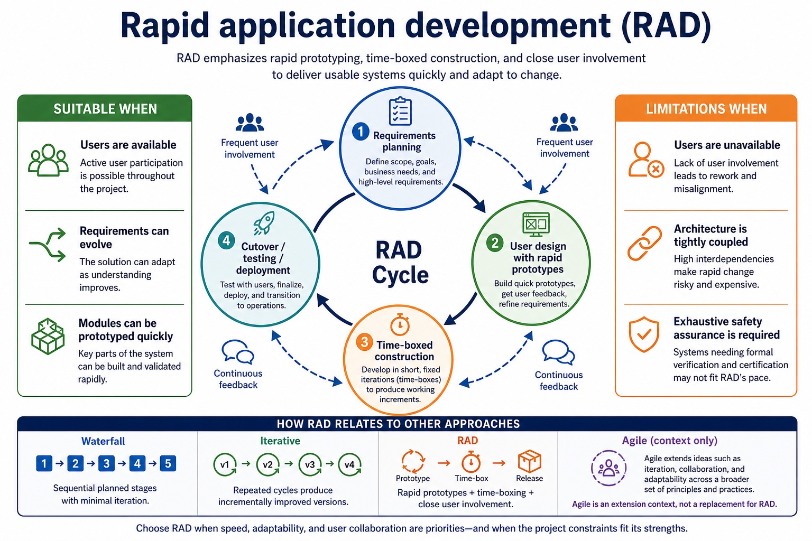
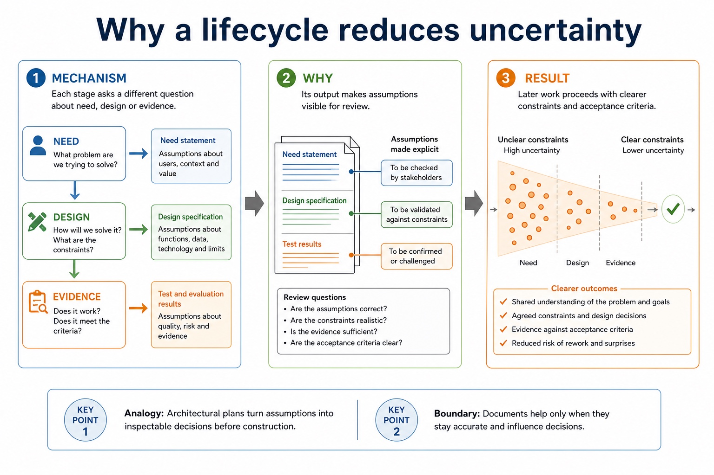
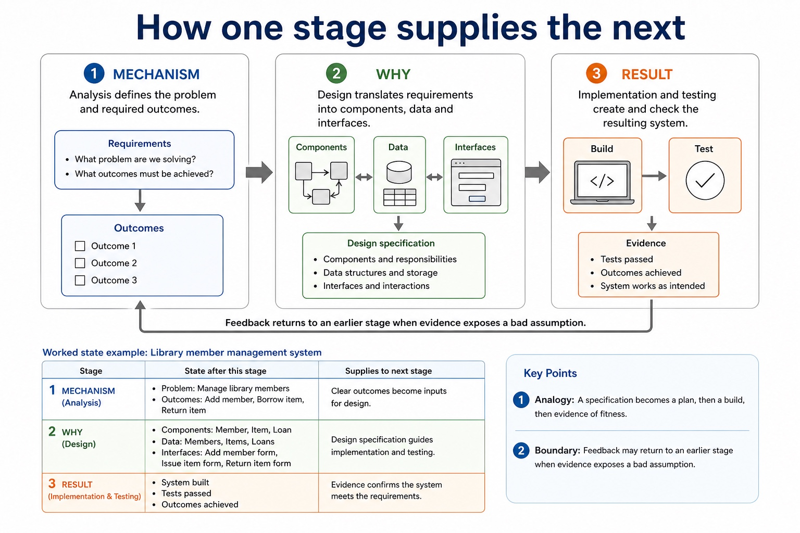
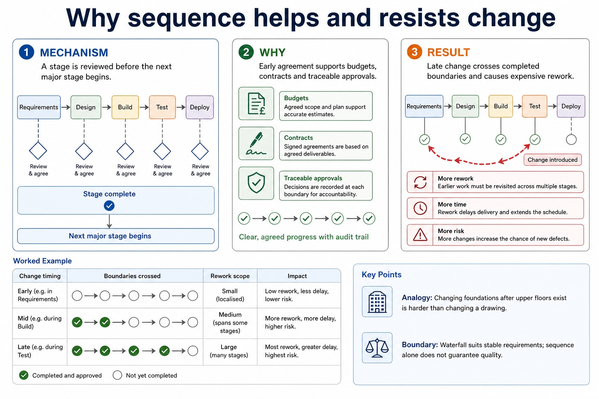
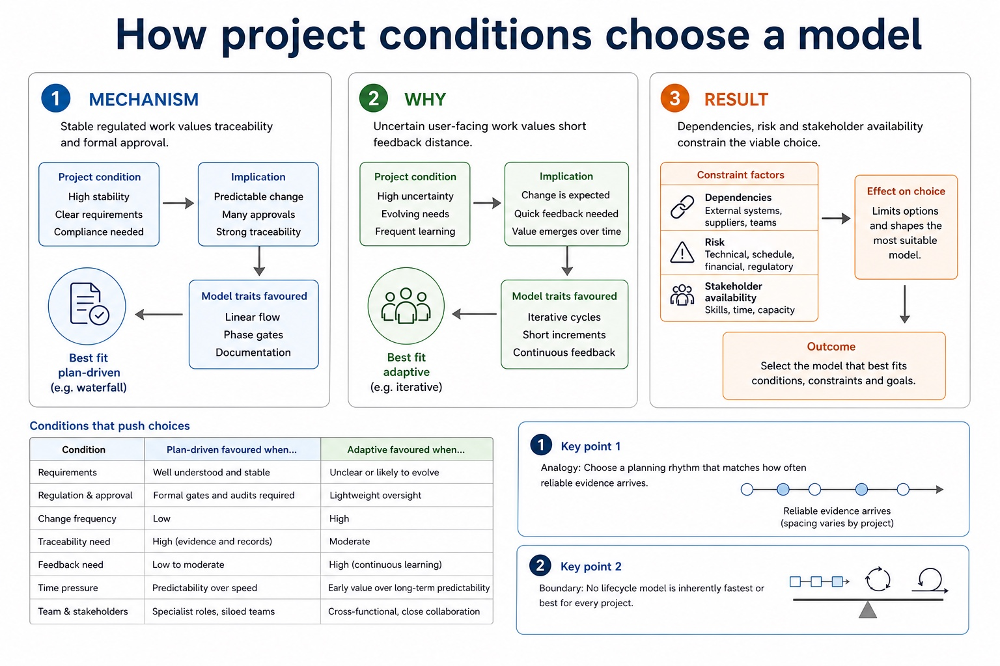

Waterfall completes planned stages largely in sequence and supports documentation and traceability, but late change can cause substantial rework. Iterative development builds and reviews repeated versions so evidence can refine later cycles.
Rapid application development (RAD) uses rapid prototyping, time-boxed development and frequent user involvement to obtain feedback quickly. It can suit an interactive system with available users, but speed and repeated prototypes can conflict with exhaustive assurance or stable architecture. Agile is related extension context, not a replacement for the named RAD model.
A program-development lifecycle gives an organised sequence for analysis, design, implementation, testing and maintenance, with review and documentation linking decisions to evidence.
Waterfall supports planned sequential stages and traceability but its limitation is costly late change. Iterative development reviews repeated versions but can need careful scope control. RAD uses rapid prototyping, time-boxing and user involvement; it may be less suitable or unsuitable where exhaustive assurance and stable architecture are required.
Worked example: Choose a lifecycle model / Choose a lifecycle model
For a small booking interface with available users and changing requirements, RAD can use a time-boxed prototype and immediate user feedback. For safety-critical stable requirements, waterfall's formal traceability may be more suitable than rapid prototyping. RAD suits a small interface whose users can review frequent prototypes. Waterfall may suit stable, safety-critical requirements where formal traceability matters, although late change remains a limitation.
Rapid application development (RAD)

Rapid application development (RAD): mechanism, reason, result, analogy and boundary condition.
Mechanism: RAD builds rapid prototypes inside short time boxes.
Reason: Users review prototypes frequently and their feedback changes the next version.
Result: RAD can respond quickly, but may not suit work requiring exhaustive assurance and stable architecture.
Analogy: A working model is reviewed and revised before the whole product is fixed.
Boundary: RAD is a named syllabus model; Agile is related extension context, not a substitute.
Core syllabus practice
Lifecycle models, purpose and limitations: apply and assess
Targeted practice
1. Identify three defining features of RAD.
Show answer
Rapid prototyping, time-boxing and frequent user involvement/feedback.
2. Which model proceeds through planned sequential stages?
Show answer
Waterfall.
3. Why might RAD be unsuitable for a safety-critical system?
Show answer
Rapid cycles may not provide the exhaustive assurance and traceability required.
4. State one waterfall limitation.
Show answer
Late change can require substantial rework.
5. Why might RAD be unsuitable for a safety-critical system?
Show answer
Rapid cycles may not provide the required exhaustive assurance and traceability.
Exam-style question
8 marks
Compare waterfall, iterative and RAD for a system whose users can review frequent prototypes. Compare waterfall, iterative and RAD, including one limitation of each model.
Show MS
Answer
Guidance
Marks
waterfall uses planned sequential stages and formal documentation
Do not substitute Agile for RAD or describe all repeated development as the same model. Do not describe all lifecycle models as the same repeated process.
1
iterative development reviews repeated versions
1
RAD uses rapid prototypes/time-boxing
1
RAD uses frequent user involvement and is linked to the scenario
Lifecycle models organise the activities used to develop and maintain software.
The five syllabus stages are analysis, design, coding, testing and maintenance.
Implementation is used here only as an explanatory synonym for coding; evaluation is a review activity, not an additional named syllabus stage.
The key requirement is to explain why each stage matters and when feedback
may send the project back to an earlier stage. Chinese support: lifecycle 生命周期, requirements 需求, maintenance 维护。
Orderanalysis, design, coding, testing and maintenance
Comparewaterfall, iterative and rapid application development (RAD)
Explainhow weak requirements or skipped testing affect the final system
Analysisrequirementsask before coding
Designsolution planinterfaces, data, algorithms
Codingimplementationcode the design
Testingevidencefind faults, feed back
Maintenancechangecorrect, adapt or improve
Why this matters
Section 12 answers often need explanation, not code. The marks come from linking lifecycle activity to project risk.
Common error
The lifecycle is not always a one-way checklist. Testing, stakeholder review and maintenance can reveal a need to revisit design or requirements.
Warm-up hook
A client says: “Make a user-friendly booking system.” What should happen first?
Choose the activity that turns the initial request into measurable requirements.
Choose the stage that turns vague wishes into usable requirements.
Purpose
Lifecycle models give structure to a software project
Plan
Identify the problem, users, requirements and constraints before building.
Control
Make progress visible through stages, documents and review points.
Improve
Use testing results and stakeholder review to identify faults or missing requirements.
Why a lifecycle reduces uncertainty

Why a lifecycle reduces uncertainty: mechanism, reason, result, analogy and boundary condition.
Mechanism: Each stage asks a different question about need, design or evidence.
Reason: Its output makes assumptions visible for review.
Result: Later work proceeds with clearer constraints and acceptance criteria.
Analogy: Architectural plans turn assumptions into inspectable decisions before construction.
Boundary: Documents help only when they stay accurate and influence decisions.
Lifecycle stages
Common stages and what each produces
Stage
Main activity
Typical artefact
Risk if weak
Analysis
find user needs and requirements
requirements specification
wrong system is built
Design
plan data, interface and algorithms
design specification
implementation lacks direction
Coding
implement the design in program code
program modules
design not realised correctly
Testing
find faults and check requirements
test plan/results
faults reach users
Maintenance
fix, adapt or improve after release
updates/change log
system becomes unsuitable
How one stage supplies the next

How one stage supplies the next: mechanism, reason, result, analogy and boundary condition.
Mechanism: Analysis defines the problem and required outcomes.
Reason: Design translates requirements into components, data and interfaces.
Result: Implementation and testing create and check the resulting system.
Analogy: A specification becomes a plan, then a build, then evidence of fitness.
Boundary: Feedback may return to an earlier stage when evidence exposes a bad assumption.
Waterfall model
Waterfall moves through stages in a planned sequence
Useful when
Requirements are stable, the project is well understood, and documentation/sign-off are important.
Risk
Late requirement changes can be costly because earlier stages may need to be revisited.
Why sequence helps and resists change

Why sequence helps and resists change: mechanism, reason, result, analogy and boundary condition.
Mechanism: A stage is reviewed before the next major stage begins.
Reason: Early agreement supports budgets, contracts and traceable approvals.
Result: Late change crosses completed boundaries and causes expensive rework.
Analogy: Changing foundations after upper floors exist is harder than changing a drawing.
Boundary: Waterfall suits stable requirements; sequence alone does not guarantee quality.
Iterative development
Iterative models build, review and refine through cycles
AnalyseDesignBuildTestReview
Each iteration can improve requirements, design or implementation. The loop is not indecision; it is controlled learning.
Mechanism: Build a limited version around a defined goal.
Reason: Review evidence from users, tests or prototypes.
Result: Feed the findings into the next improved cycle.
Analogy: A model is built, inspected and revised before the full structure is fixed.
Boundary: Repeated work without a review goal is rework, not controlled iteration.
Rapid application development
RAD uses rapid prototypes, time boxes and frequent user involvement
Rapid prototyping
Build a working model quickly so requirements and interface decisions become visible.
Time-boxing
Complete a defined set of work inside a short fixed period, then review the result.
User involvement
Users review prototypes frequently and their feedback changes the next version.
RAD can respond quickly when informed users are available, but may be unsuitable where exhaustive assurance and stable architecture are more important than speed.
Extension: not a replacement for RAD
Agile development emphasises short cycles and user feedback
Frequent delivery
Small working increments are produced and reviewed.
User feedback
Users can comment early, before the wrong system becomes large.
Change handling
Changing requirements can be handled more flexibly than in a rigid sequence.
Why short feedback cycles support change
Why short feedback cycles support change: mechanism, reason, result, analogy and boundary condition.
Mechanism: A small increment makes assumptions visible quickly.
Reason: Frequent stakeholder feedback reprioritises the next increment.
Result: Less unreviewed work depends on a mistaken requirement.
Analogy: Regular design reviews correct direction while only a small section is built.
Boundary: Agile still requires architecture, testing and available informed stakeholders.
Comparison
Choose a lifecycle model using the project requirements
Situation
Suitable approach
Reason
stable legal payroll rules
waterfall or structured model
clear requirements and documentation matter
new app with uncertain user preferences and available users
RAD
rapid prototypes and time-boxed feedback refine requirements
safety-critical control system
planned lifecycle with strong testing
risk and evidence need tight control
How project conditions choose a model

How project conditions choose a model: mechanism, reason, result, analogy and boundary condition.
Mechanism: Stable regulated work values traceability and formal approval.
Reason: Uncertain user-facing work values short feedback distance.
Result: Dependencies, risk and stakeholder availability constrain the viable choice.
Analogy: Choose a planning rhythm that matches how often reliable evidence arrives.
Boundary: No lifecycle model is inherently fastest or best for every project.
Artefacts
Exam answers often mention documents or outputs from stages
Document/output
Stage
Use
requirements specification
analysis
states what system must do
design specification
design
guides implementation
test plan and results
testing
provide evidence against expected results
user documentation
implementation/release
helps users operate the system
maintenance log
maintenance
records fixes and changes
Why artefacts make decisions traceable
Why artefacts make decisions traceable: mechanism, reason, result, analogy and boundary condition.
Mechanism: Requirements define what successful behaviour means.
Reason: Designs and tests link implementation choices to those requirements.
Result: Traceability exposes every item affected by a later change.
Analogy: A linked evidence trail shows which plans and checks depend on one decision.
Boundary: An outdated artefact can mislead more than an absent one.
Interactive model selector
Choose a project situation and compare model suitability
Stage order checker
Spot the stage that should usually happen first
Worked examples
Apply the lifecycle to realistic project decisions
Practice
Instant checking: lifecycle terms and consequences
Mistake debugging
Fix weak lifecycle explanations
Exam-style questions
Cambridge-style lifecycle questions with expandable MS
These are original questions written in Cambridge style. They do not copy past paper questions.
Summary
What to remember
Stagesanalysis, design, coding, testing and maintenance
Modelswaterfall is sequential; iterative uses repeated versions; RAD uses rapid prototypes, time boxes and user involvement
Markslink each stage to an artefact, a user, and a risk if skipped
Homework
Use the lifecycle, do not just list it
For a school booking system, write two measurable requirements and state which lifecycle stage produces them.
Compare waterfall and iterative development for a mobile app with uncertain user preferences.
Answer a 6-mark question explaining why testing results or stakeholder review may send a project back to design.